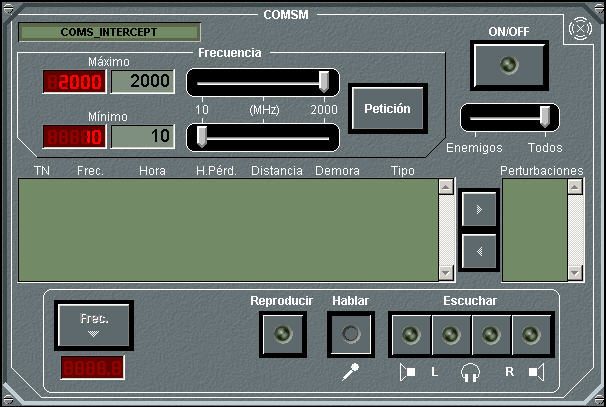

COMESM

Desde este panel de detalle del COMSM pueden realizarse las siguientes acciones:
- Encender / Apagar el equipo: Pulsando el botón ON/OFF. El equipo COMSM siempre se encuentra encendido inicialmente, pudiendo ser apagado por el operador. En las unidades submarinas solo se puede encender el ESM si están en superficie o tienen el mástil correspondiente izado. En general, para todas las unidades, deben estar fuera de la base.
- Consultar / Modificar Frecuencias Mínima y Máxima de trabajo: los indicadores de frecuencia muestran las frecuencias mínima y máxima de trabajo del COMSM, en Megahercios. Pueden ser modificadas mediante las barras de desplazamiento (Frec.1 – Frec.2) y pulsando Petición.
- Filtrar las detecciones: Utilizando la barra de desplazamiento (Enemigos – Todos), se puede filtrar la lista de detecciones de manera que se listen solo las enemigas o todas. Tanto en la lista de detecciones, como en la presentación táctica aparecerán únicamente aquellas detecciones que cumplan la condición del filtro.
- Consultar Detecciones: En la lista de detecciones aparecerán las detecciones según el filtro seleccionado, hasta un máximo de 20 detecciones, ordenados de más a menos recientes. Los datos que aparecen en la lista para cada detección son:
- TN: Track Number de la detección.
- Frecuencia: Frecuencia de la detección, en Megahercios. Este dato tiene error que depende de la configuración del equipo (ver Manual de Preparación – Contramedidas – COMSM).
- Hora: Instante en que se adquirió la detección.
- Hora Pérdida: Instante en el que se perdió la detección.
- Distancia: Distancia a la detección, en millas, con un error máximo del 40% en caso de emisiones U/VHF y de un 10% en el caso de emisiones HF. Los tantos por ciento de error son configurables en Galeon.ini. Por configuración (en Galeon.ini) se puede eliminar este dato de la lista.
- Demora: Demora de la detección, en grados. Este dato de demora tiene error que depende de la configuración del equipo (ver Preparación – Contramedidas – COMSM).
- Tipo: Tipo de la emisión. Puede ser Fonía, Fonía Cifrada, Link o Mensajería.
- Monitorizar / Decepcionar una frecuencia: Seleccionando una detección y pulsando el botón Frec.►, se selecciona la frecuencia dicha detección para su escucha y/o transmisión. Debajo de este botón se mostrará la frecuencia seleccionada y a la derecha se incluyen los controles necesarios para escuchar o transmitir, similares a los de la ventana de fonía (ver Manual de Alumno – Comunicaciones – Fonía). Al actuar sobre ellos, escuchará o transmitirá en aquellas redes cuya frecuencia de trabajo coincida con la frecuencia seleccionada. El operador podrá, por tanto, monitorizar (si sólo escucha) o decepcionar (si además transmite) estas redes. También es posible decepcionar, pulsando el botón Reproducir, en este caso se transmite por la frecuencia seleccionada el fichero .wav que se haya establecido en el fichero de configuración (Galeon.ini).
Nota: Las redes de fonía que estén seleccionadas para escucha (ver Control de Unidades – Comunicaciones – Fonía) no podrán ser seleccionadas para su monitorización.
- Perturbar una detección: Mediante esta acción, el operador puede perturbar una frecuencia, correspondiente a la detección seleccionada. Esto implica que se aplicará un nivel de ruido (similar al sonido de campanas), a las recepciones y transmisiones en la redes de fonía que trabajen en esta frecuencia, de todas las unidades que estén en alcance. Se podrán perturbar simultáneamente, como máximo, tantas redes como se haya especificado para el equipo COMSM.